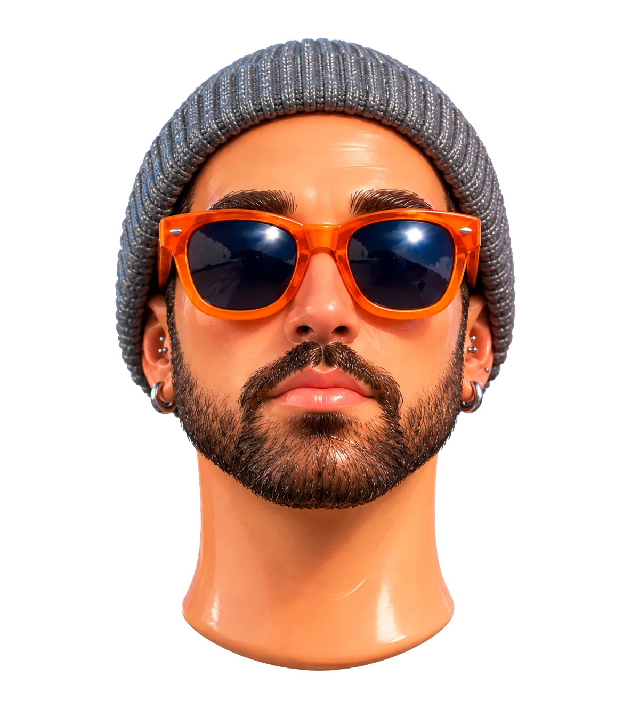
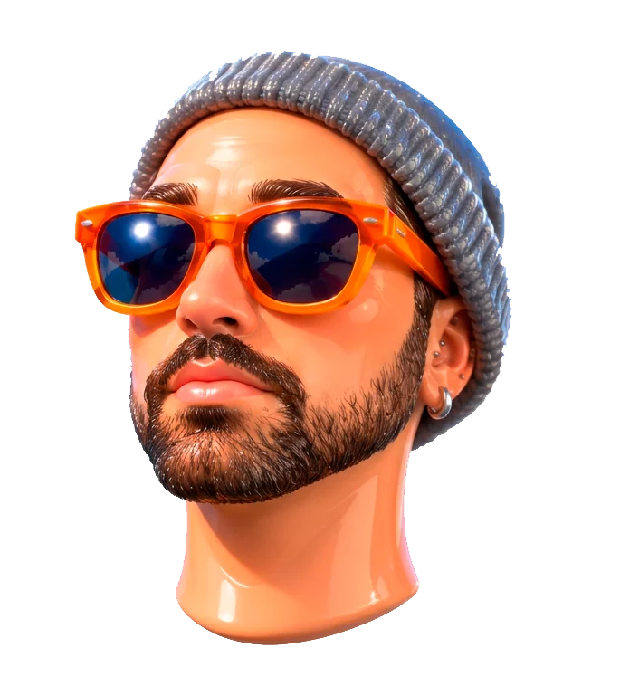
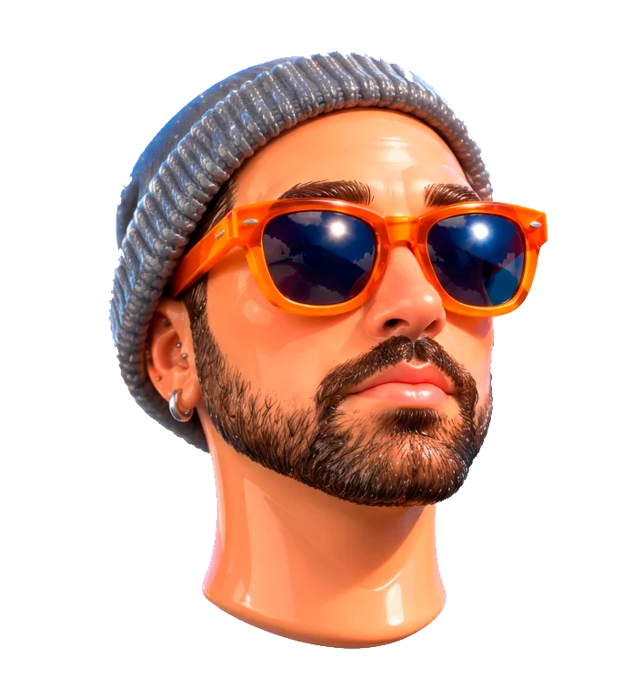
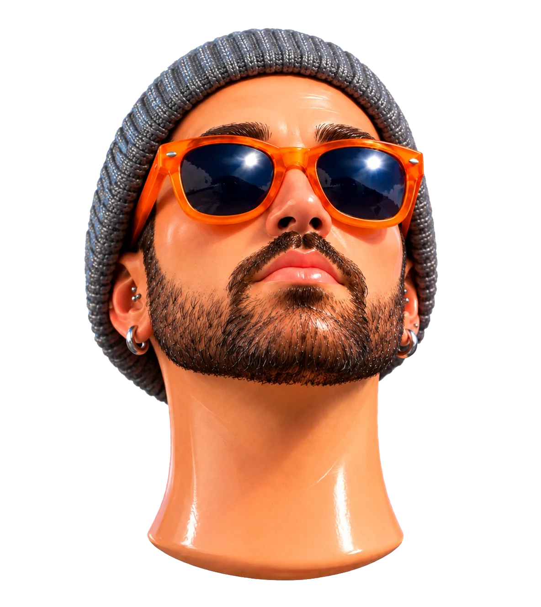
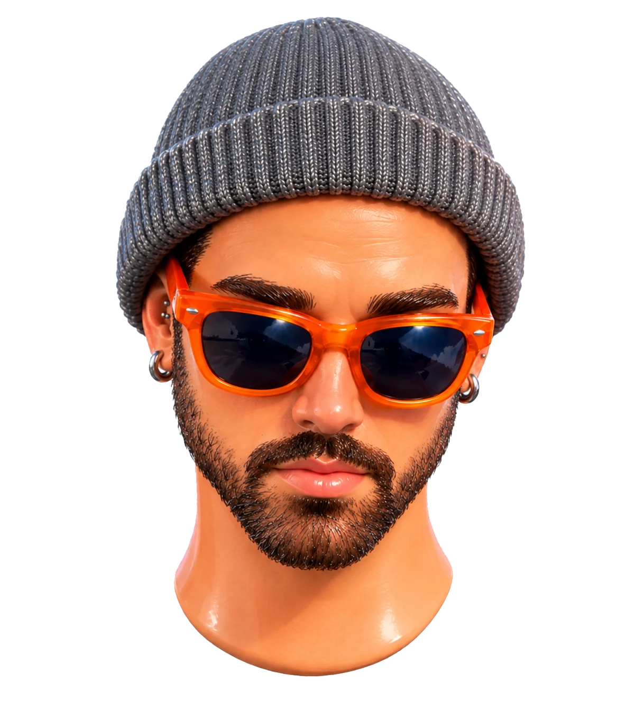
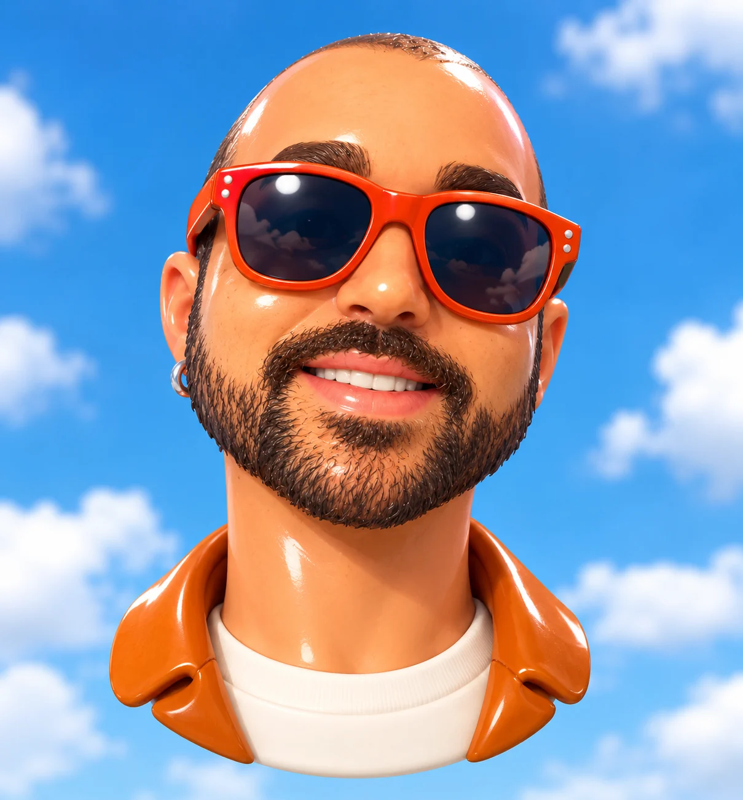
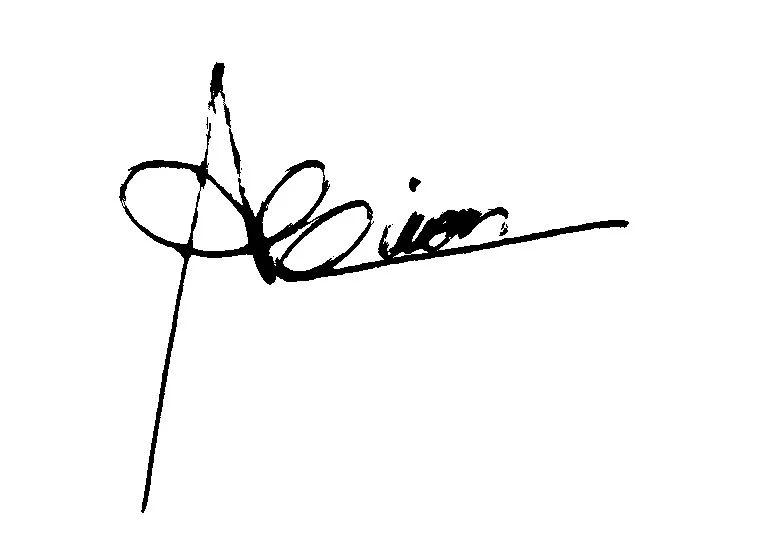
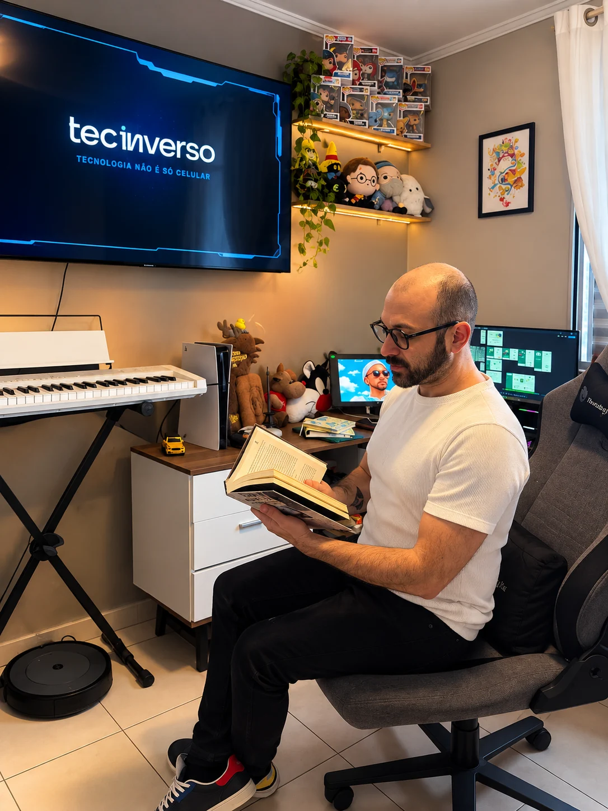

01
Descobertas e Pesquisa
Eu mergulho no problema, nos usuários e no contexto de uso, replicando o processo de descoberta real de um time de produto, pra entender o que realmente importa antes de desenhar qualquer tela.





👋 Oi, sou Maicon
Crio experiências digitais pensando em quem vai usar: interfaces simples, acessíveis e feitas para resolver problemas reais do dia a dia.
Meus trabalhos
Quem sou Eu

Oi, eu sou o Maicon, um UX/UI Designer que acredita que uma boa interface não deve só funcionar, ela deve fazer sentido para quem usa. Venho do Design Gráfico e estou aprofundando essa base com uma especialização em UX/UI, aplicando esse olhar pra transformar necessidades reais em experiências digitais simples, acessíveis e bem cuidadas, do wireframe ao protótipo final.
Meu processo combina pesquisa e estratégia: entender o problema antes de desenhar a solução, mapear a jornada do usuário e cuidar de cada detalhe, do fluxo de navegação à acessibilidade. Estou construindo o hábito de documentar cada decisão pensando em quem vai desenvolver depois, pra que o que foi planejado no design chegue o mais fiel possível até a tela final.

Meus Processos
Eu mergulho no problema, nos usuários e no contexto de uso, replicando o processo de descoberta real de um time de produto, pra entender o que realmente importa antes de desenhar qualquer tela.
Eu exploro conceitos, testo fluxos e interações, aplicando o mesmo rigor de um processo profissional de UX até a experiência parecer intuitiva.
Eu finalizo protótipos de alta fidelidade e especificações de handoff, praticando a entrega do jeito que aconteceria num time real de produto.
